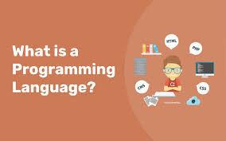

the definitions
links:
Programming language
A programming language is a formal language comprising a set of strings that produce various kinds of machine code output. Programming languages are one kind of computer language, and are used in computer programming to implement algorithms.
Most programming languages consist of instructions for computers. There are programmable machines that use a set of specific instructions, rather than general programming languages. Since the early 1800s, programs have been used to direct the behavior of machines such as Jacquard looms, music boxes and player pianos.[1] The programs for these machines (such as a player piano's scrolls) did not produce different behavior in response to different inputs or conditions.
Thousands of different programming languages have been created, and more are being created every year. Many programming languages are written in an imperative form (i.e., as a sequence of operations to perform) while other languages use the declarative form (i.e. the desired result is specified, not how to achieve it).
The description of a programming language is usually split into the two components of syntax (form) and semantics (meaning). Some languages are defined by a specification document (for example, the C programming language is specified by an ISO Standard) while other languages (such as Perl) have a dominant implementation that is treated as a reference. Some languages have both, with the basic language defined by a standard and extensions taken from the dominant implementation being common.
Definitions

A programming language is a notation for writing programs, which are specifications of a computation or algorithm.[2] Some authors restrict the term "programming language" to those languages that can express all possible algorithms.[2][3] Traits often considered important for what constitutes a programming language include:
Function and target
A computer programming language is a language used to write computer programs, which involves a computer performing some kind of computation[4] or algorithm and possibly control external devices such as printers, disk drives, robots,[5] and so on. For example, PostScript programs are frequently created by another program to control a computer printer or display. More generally, a programming language may describe computation on some, possibly abstract, machine. It is generally accepted that a complete specification for a programming language includes a description, possibly idealized, of a machine or processor for that language.[6] In most practical contexts, a programming language involves a computer; consequently, programming languages are usually defined and studied this way.[7] Programming languages differ from natural languages in that natural languages are only used for interaction between people, while programming languages also allow humans to communicate instructions to machines.
Abstractions
Programming languages usually contain abstractions for defining and manipulating data structures or controlling the flow of execution. The practical necessity that a programming language support adequate abstractions is expressed by the abstraction principle.[8] This principle is sometimes formulated as a recommendation to the programmer to make proper use of such abstractions.[9]
Expressive power
The theory of computation classifies languages by the computations they are capable of expressing. All Turing-complete languages can implement the same set of algorithms. ANSI/ISO SQL-92 and Charity are examples of languages that are not Turing complete, yet are often called programming languages.[10][11]
Markup languages like XML, HTML, or troff, which define structured data, are not usually considered programming languages.[12][13][14] Programming languages may, however, share the syntax with markup languages if a computational semantics is defined. XSLT, for example, is a Turing complete language entirely using XML syntax.[15][16][17] Moreover, LaTeX, which is mostly used for structuring documents, also contains a Turing complete subset.[18][19]
The term computer language is sometimes used interchangeably with programming language.[20] However, the usage of both terms varies among authors, including the exact scope of each. One usage describes programming languages as a subset of computer languages.[21] Similarly, languages used in computing that have a different goal than expressing computer programs are generically designated computer languages. For instance, markup languages are sometimes referred to as computer languages to emphasize that they are not meant to be used for programming.[22]
Another usage regards programming languages as theoretical constructs for programming abstract machines, and computer languages as the subset thereof that runs on physical computers, which have finite hardware resources.[23] John C. Reynolds emphasizes that formal specification languages are just as much programming languages as are the languages intended for execution. He also argues that textual and even graphical input formats that affect the behavior of a computer are programming languages, despite the fact they are commonly not Turing-complete, and remarks that ignorance of programming language concepts is the reason for many flaws in input formats.[24]
Early developments
Very early computers, such as Colossus, were programmed without the help of a stored program, by modifying their circuitry or setting banks of physical controls.
Slightly later, programs could be written in machine language, where the programmer writes each instruction in a numeric form the hardware can execute directly. For example, the instruction to add the value in two memory locations might consist of 3 numbers: an "opcode" that selects the "add" operation, and two memory locations. The programs, in decimal or binary form, were read in from punched cards, paper tape, magnetic tape or toggled in on switches on the front panel of the computer. Machine languages were later termed first-generation programming languages (1GL).
The next step was the development of the so-called second-generation programming languages (2GL) or assembly languages, which were still closely tied to the instruction set architecture of the specific computer. These served to make the program much more human-readable and relieved the programmer of tedious and error-prone address calculations.
The first high-level programming languages, or third-generation programming languages (3GL), were written in the 1950s. An early high-level programming language to be designed for a computer was Plankalkül, developed for the German Z3 by Konrad Zuse between 1943 and 1945. However, it was not implemented until 1998 and 2000.[25]
John Mauchly's Short Code, proposed in 1949, was one of the first high-level languages ever developed for an electronic computer.[26] Unlike machine code, Short Code statements represented mathematical expressions in understandable form. However, the program had to be translated into machine code every time it ran, making the process much slower than running the equivalent machine code.
At the University of Manchester, Alick Glennie developed Autocode in the early 1950s. As a programming language, it used a compiler to automatically convert the language into machine code. The first code and compiler was developed in 1952 for the Mark 1 computer at the University of Manchester and is considered to be the first compiled high-level programming language.[27][28]
The second autocode was developed for the Mark 1 by R. A. Brooker in 1954 and was called the "Mark 1 Autocode". Brooker also developed an autocode for the Ferranti Mercury in the 1950s in conjunction with the University of Manchester. The version for the EDSAC 2 was devised by D. F. Hartley of University of Cambridge Mathematical Laboratory in 1961. Known as EDSAC 2 Autocode, it was a straight development from Mercury Autocode adapted for local circumstances and was noted for its object code optimisation and source-language diagnostics which were advanced for the time. A contemporary but separate thread of development, Atlas Autocode was developed for the University of Manchester Atlas 1 machine.
In 1954, FORTRAN was invented at IBM by John Backus. It was the first widely used high-level general purpose programming language to have a functional implementation, as opposed to just a design on paper.[29][30] It is still a popular language for high-performance computing[31] and is used for programs that benchmark and rank the world's fastest supercomputers.[32]
Another early programming language was devised by Grace Hopper in the US, called FLOW-MATIC. It was developed for the UNIVAC I at Remington Rand during the period from 1955 until 1959. Hopper found that business data processing customers were uncomfortable with mathematical notation, and in early 1955, she and her team wrote a specification for an English programming language and implemented a prototype.[33] The FLOW-MATIC compiler became publicly available in early 1958 and was substantially complete in 1959.[34] FLOW-MATIC
was a major influence in the design of COBOL, since only it and its direct descendant AIMACO were in actual use at the time.[35]
Refinement
The increased use of high-level languages introduced a requirement for low-level programming languages or system programming languages. These languages, to varying degrees, provide facilities between assembly languages and high-level languages. They can be used to perform tasks that require direct access to hardware facilities but still provide higher-level control structures and error-checking.
The period from the 1960s to the late 1970s brought the development of the major language paradigms now in use:
- APL introduced array programming and influenced functional programming.[36]
- ALGOL refined both structured procedural programming and the discipline of language specification; the "Revised Report on the Algorithmic Language ALGOL 60" became a model for how later language specifications were written.
- Lisp, implemented in 1958, was the first dynamically typed functional programming language.
- In the 1960s, Simula was the first language designed to support object-oriented programming; in the mid-1970s, Smalltalk followed with the first "purely" object-oriented language.
- C was developed between 1969 and 1973 as a system programming language for the Unix operating system and remains popular.[37]
- Prolog, designed in 1972, was the first logic programming language.
- In 1978, ML built a polymorphic type system on top of Lisp, pioneering statically typed functional programming languages.
Each of these languages spawned descendants, and most modern programming languages count at least one of them in their ancestry.
The 1960s and 1970s also saw considerable debate over the merits of structured programming, and whether programming languages should be designed to support it.[38] Edsger Dijkstra, in a famous 1968 letter published in the Communications of the ACM, argued that Goto statements should be eliminated from all "higher level" programming languages.[39]
Consolidation and growth
A selection of textbooks that teach programming, in languages both popular and obscure. These are only a few of the thousands of programming languages and dialects that have been designed in history.
The 1980s were years of relative consolidation. C++ combined object-oriented and systems programming. The United States government standardized Ada, a systems programming language derived from Pascal and intended for use by defense contractors. In Japan and elsewhere, vast sums were spent investigating the so-called "fifth-generation" languages that incorporated logic programming constructs.[40] The functional languages community moved to standardize ML and Lisp. Rather than inventing new paradigms, all of these movements elaborated upon the ideas invented in the previous decades.
One important trend in language design for programming large-scale systems during the 1980s was an increased focus on the use of modules or large-scale organizational units of code. Modula-2, Ada, and ML all developed notable module systems in the 1980s, which were often wedded to generic programming constructs.[41]
The rapid growth of the Internet in the mid-1990s created opportunities for new languages. Perl, originally a Unix scripting tool first released in 1987, became common in dynamic websites. Java came to be used for server-side programming, and bytecode virtual machines became popular again in commercial settings with their promise of "Write once, run anywhere" (UCSD Pascal had been popular for a time in the early 1980s). These developments were not fundamentally novel; rather, they were refinements of many existing languages and paradigms (although their syntax was often based on the C family of programming languages).
Programming language evolution continues, in both industry and research. Current directions include security and reliability verification, new kinds of modularity (mixins, delegates, aspects), and database integration such as Microsoft's LINQ.
Fourth-generation programming languages (4GL) are computer programming languages that aim to provide a higher level of abstraction of the internal computer hardware details than 3GLs. Fifth-generation programming languages (5GL) are programming languages based on solving problems using constraints given to the program, rather than using an algorithm written by a programmer.